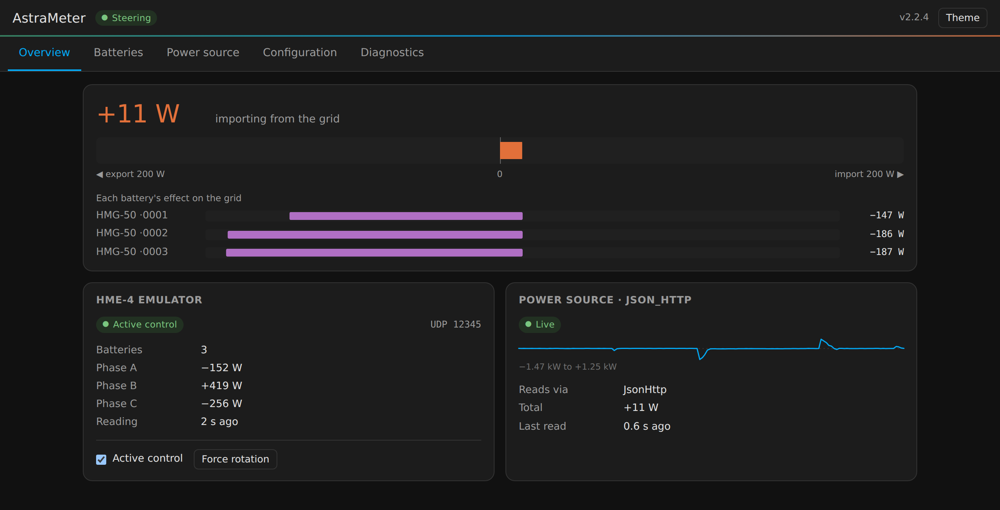
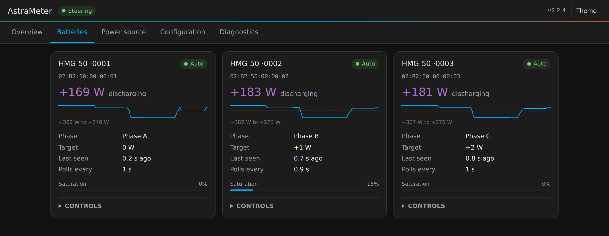

What is AstraMeter?
Marstek balcony batteries decide when to charge or discharge by listening to a power meter on your home's grid connection. If you don't have the exact meter they expect — or you run several batteries that need to share the load — that's a problem. AstraMeter solves it by impersonating a meter the battery trusts, while reading your real grid power from a source you already have.
Why AstraMeter
Everything you need to make a third-party meter behave like a first-party one.
How it works
Three steps from "unsupported meter" to a balanced battery fleet.
-
1
Choose where it runs
Home Assistant add-on, Docker, a Raspberry Pi, or directly on a tiny ESP32 chip. Pick whatever you already have.
-
2
Point it at your meter
Shelly, Home Assistant, MQTT, a smart-meter reader, Modbus… AstraMeter reads your real grid power from 18+ sources.
-
3
Your battery balances itself
AstraMeter reports the reading in the format the battery expects and steers one or many batteries toward net-zero grid.
Watch it work
A live status page is built in — nothing extra to install. Open it from the Home Assistant sidebar, or on port 52500 anywhere else.


Supported devices
Works with Marstek storage systems, emulating the meters their firmware expects.
Marstek storage systems
If your Marstek battery supports a CT002/CT003 or Shelly meter, AstraMeter can drive it.
Emulated meters
Use a Shelly type for a single battery, or CT002/CT003 to balance several.
Read from the meter you already have
18 supported grid-power sources — pick yours in the generator.
Run it your way
Four ways to deploy. The config generator writes the file for whichever you choose.
🏠 Home Assistant Add-on
The easiest path if you run Home Assistant. One-click install and integration.
Recommended Setup guide ↗🐳 Docker
Run the emulator in a container on any machine with Docker. Great for a NAS or home server.
Setup guide ↗🔌 ESPHome (ESP32)
No PC left running — flash a cheap ESP32 chip and it becomes the meter on its own.
Setup guide ↗💻 Direct install
Install and run directly with Python on Linux, macOS, or a Raspberry Pi.
Setup guide ↗Not sure where to start? Let the generator do it.
Answer a few plain-language questions about your meter and get a ready-to-use configuration — with every option explained, a live preview, and save / share / reload of your answers.
Frequently asked questions
Do I need to buy a specific power meter?
No — that's the point. AstraMeter reads your real grid power from something you likely already have (a Shelly, Home Assistant, an MQTT topic, a smart-meter reader, Modbus, and more) and presents it to the battery as the meter it expects.
Should I use Shelly emulation or CT002/CT003?
Use a Shelly type for a single battery. Choose CT002/CT003 when you run two or more batteries that should share the load — AstraMeter then balances them with fair distribution and saturation handling.
What's the difference between running on Home Assistant, Docker, and ESP32?
They all run the same emulator. Home Assistant and Docker run it as software; the ESP32 (via ESPHome) runs it on a tiny standalone chip so nothing else needs to stay on. The config generator produces the right file for each.
Is it really free?
Yes. AstraMeter is open source under the GPL-3.0 license. The config generator runs entirely in your browser — nothing is uploaded.
Which Marstek batteries are supported?
B2500, Venus, Jupiter and others. If your Marstek battery can be pointed at a CT002/CT003 or Shelly meter, AstraMeter can drive it.